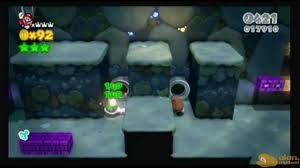
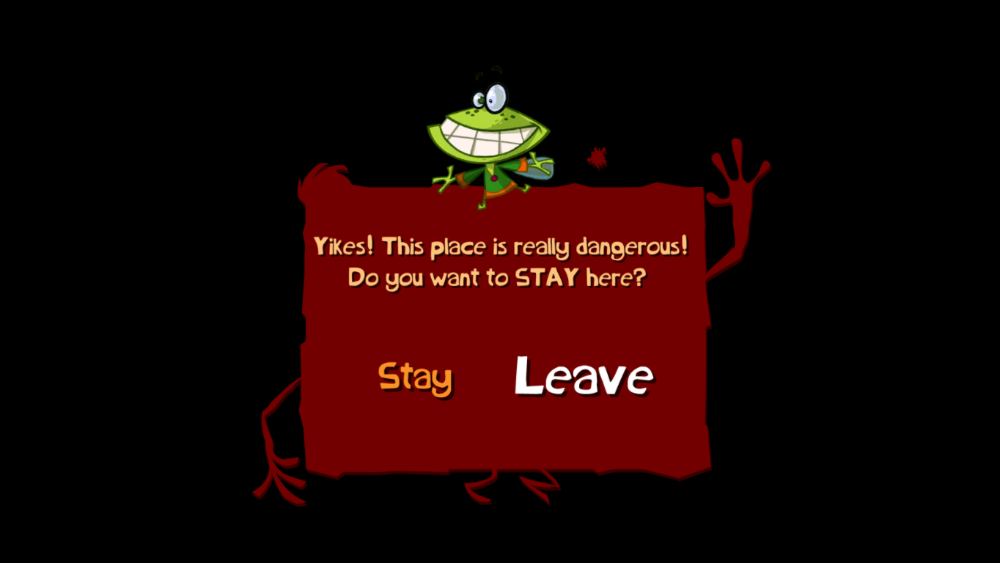

- Crash Bandicoot: N. Sane Triology
(Crash 1) Did you know while fighting the first boss, Papu Papu, you can jump onto his chair and he can't reach you, this is a very useful trick when speedrunning!😁
- Super Mario 3D World
In 1-2, Koopa Troopa Cave, if you get a koopa shell and bring the shell to the small passage, (mushroom is needed as you'll take damage first time you throw the shell ), you will keep jumping on the shell and get 1 ups! This is very useful if you find the game tricky!

Rayman Origins
If you find a level difficult, you can choose to skip the level or beat it on your own. useful if you find a level difficult.
Donkey Kong Country: Tropical Freeze(Nintendo Switch Version ONLY)
Wii U users, you're outta luck here. After a certain amount of deaths on a level, the next level is unlocked. For me I just completed the level as I played as Funky Kong.
New Super Mario Bros. Wii/New Super Mario Bros. U
If you're playing any of the games mentioned above, after you die 8 times on the same level, a super guide block will appear